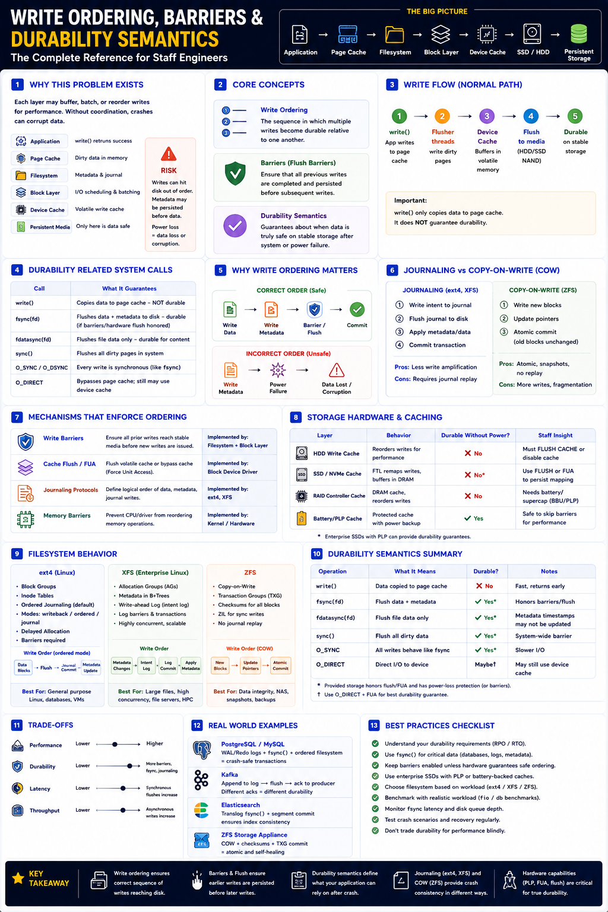

How data safely reaches persistent storage — Staff Engineer level
The Big Picture
write() does not save your data. It only copies data into the kernel page cache. Without proper ordering, a crash can corrupt data even after write() returned success.
Write Lifecycle — Layer by Layer
| Layer | Purpose | Durable? |
|---|---|---|
| Application Buffer | Temporary in-process memory | ❌ No |
| Page Cache | OS-managed buffered I/O | ❌ No |
| Filesystem Journal | Crash recovery log | ⚠ Partially |
| Device Cache (DRAM) | Performance buffer in SSD/HDD | ❌ No (unless PLP) |
| Persistent Media | Flash / magnetic platters | ✅ Yes |
Only persistent media is truly durable. Everything above it is volatile until flushed.
Why Write Ordering Matters
Wrong order → corruption
Correct order → safe
Core Concepts
| Concept | Meaning |
|---|---|
| Write Ordering | Sequence in which writes become durable on media |
| Barrier | Prevents later writes from passing earlier writes |
| Flush | Forces device cache contents to persistent media |
| FUA | Force Unit Access — bypasses volatile cache on write |
| Durability | Data survives crashes and power failures |
| Persistence | Data physically written to non-volatile media |
| Consistency | Metadata and data remain logically correct |
Durability System Calls
| API | Guarantees | Use When |
|---|---|---|
write() | Copies to page cache only | Buffered I/O (not durable) |
fsync() | Flushes data + metadata | Critical data (DB transactions) |
fdatasync() | Flushes file data only | Avoid metadata flush overhead |
sync() | Flushes entire filesystem | System-wide flush (rare) |
O_SYNC | Every write is synchronous | High-integrity sequential writes |
O_DIRECT | Bypasses page cache entirely | Databases with own caching |
fsync() is the most common durability guarantee in databases (PostgreSQL WAL, Kafka log flush).
Barriers & Flush Commands
A barrier ensures Write B cannot become durable before Write A.
Hardware flush commands
| Command | Purpose |
|---|---|
ATA FLUSH CACHE | HDD: write volatile cache to platters |
NVMe FLUSH | SSD: commit controller cache to flash |
REQ_FLUSH | Linux block layer flush request |
REQ_FUA | Write directly to media, skip volatile cache |
Write Ordering by Filesystem
ext4 — Ordered Mode (default)
XFS — Metadata Log
ZFS — Copy-on-Write
COW vs Journaling
| Feature | Journaling (ext4/XFS) | Copy-on-Write (ZFS) |
|---|---|---|
| Update strategy | In-place + log | New blocks always |
| Crash recovery | Journal replay | Atomic pointer swap |
| Snapshots | External (LVM) | Native, instant |
| Write amplification | Low | Higher |
| Data integrity | Good | Excellent (checksums) |
| Barriers required | Yes | Mostly no |
Device Cache & Power Loss Protection
Most storage devices buffer writes in volatile DRAM. Without protection, power loss destroys buffered data even after fsync().
| Hardware | Behavior |
|---|---|
| Consumer HDD | Volatile write cache — risky without barriers |
| Consumer SSD | FTL cache in DRAM — vulnerable to power loss |
| Enterprise SSD (PLP) | Supercapacitor flushes cache on power loss ✅ |
| RAID Controller | DRAM cache — safe only with battery backup (BBU) |
Durability depends on hardware as much as software. A PLP SSD + correct fsync() = true durability.
Database Perspective
PostgreSQL
Kafka
Elasticsearch
Performance vs Durability Trade-offs
| Feature | Better Perf | Better Durability |
|---|---|---|
| Write Cache | ✔ Yes | ❌ Risk on power loss |
| Barriers Disabled | ✔ Higher throughput | ❌ Corruption risk |
| fsync Every Write | ❌ High latency | ✔ Guaranteed safe |
| Batch / Group Commits | ✔ Good balance | ✔ Moderate |
| PLP Enterprise SSD | ✔ Fast + safe | ✔ Hardware guarantee |
Best approach: group commits + PLP SSD = high throughput AND durability.
Staff Engineer Thinking
Junior
Does write() save my file?
Senior
Should we call fsync()?
Staff asks
Production Failure Scenarios
Data Lost After Crash
Cause: Application relied only on write() · Fix: Use fsync() or synchronous commit
Filesystem Corruption on Reboot
Cause: Write reordering with barriers disabled · Fix: Enable barriers, use ordered journaling
High fsync Latency
Cause: Frequent device cache flushes on consumer SSD · Fix: PLP-enabled SSD or batch/group commits
Slow Database Writes
Cause: Every transaction calls fsync() individually · Fix: Group commits or tune commit interval
Unsafe Performance Optimization
Cause: Write barriers disabled on cheap hardware · Fix: Only disable with battery-backed RAID or PLP SSD
Staff Engineer Decision Framework
| Requirement | Recommended Approach |
|---|---|
| Maximum Durability | fsync() + barriers + PLP SSD |
| Balanced Performance | ext4 Ordered Mode + group commits |
| Highest Throughput | Batched/group commits + async flush |
| Enterprise Storage | PLP SSD + FUA writes |
| Maximum Integrity | ZFS Copy-on-Write + checksums |
| Database WAL | fdatasync() + ordered filesystem |
Production Debugging Checklist
mount | grep barrierhdparm -I /dev/sdafsync() latency: fio --fsync=1fio before changing durability settingsKey Takeaways
